भूगोल (कक्षा 10) - अध्याय 5
खनिज तथा ऊर्जा संसाधन (Minerals & Energy Resources) - संपूर्ण मास्टर नोट्स
हमारे दैनिक जीवन की लगभग प्रत्येक वस्तु—सुई से लेकर विशालकाय इमारतें, जलपोत, रेलगाड़ियां, बसें तथा बिजली—खनिजों से ही निर्मित होती हैं। भोजन में भी जो पोषक तत्व हम ग्रहण करते हैं, वे खनिज ही हैं।
💎 खनिज की भू-वैज्ञानिक परिभाषा (Geological Definition):
खनिज प्राकृतिक रूप से पाया जाने वाला एक ऐसा समरूप (Homogeneous) तत्व/यौगिक है जिसकी एक निश्चित आंतरिक परमाण्विक संरचना (Definite Internal Structure) होती है। प्रकृति में खनिज अत्यंत कठोर (हीरा) से लेकर अत्यंत कोमल (टैल्क / सोपस्टोन) रूप में पाए जाते हैं।
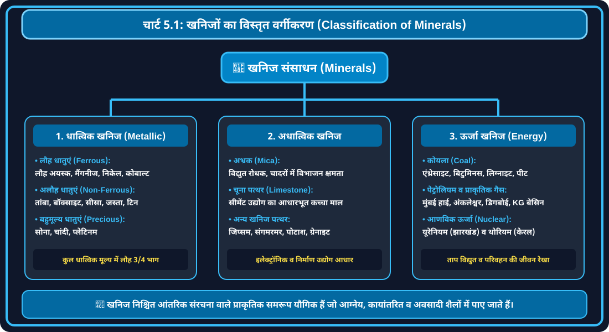
चार्ट 5.1: खनिजों का विस्तृत वर्गीकरण (Classification of Minerals)।
📊 खनिजों का 3-स्तरीय वर्गीकरण:
• धात्विक (Metallic): लौह युक्त (लोहा, मैंगनीज), अलौह (तांबा, बॉक्साइट), बहुमूल्य (सोना, चांदी)।
• अधात्विक (Non-Metallic): अभ्रक, चूना पत्थर, जिप्सम, संगमरमर।
• ऊर्जा खनिज (Energy): कोयला, पेट्रोलियम, प्राकृतिक गैस, आणविक खनिज (यूरेनियम, थोरियम)।
खनिज प्रायः 'अयस्कों' (Ores) में पाए जाते हैं। किसी भी खनिज के खनन की आर्थिक व्यावहार्यता अयस्क में खनिज के सांद्रण (Concentration), निष्कर्षण की सुगमता तथा बाजार की समीपता पर निर्भर करती है। खनिज मुख्य रूप से 5 रूपों में पाए जाते हैं:
- आग्नेय तथा कायांतरित शैलों में (शिराएं व लाम / Veins & Lodes): तरल या गैसीय अवस्था में खनिज दरारों, जोड़ों और भ्रंशों से ऊपर की ओर धकेले जाते हैं और ठंडे होकर जम जाते हैं। (उदाहरण: तांबा, जस्ता, सीसा, टिन)।
- अवसादी शैलों में (संस्तर या परतें / Beds or Layers): खनिजों का निर्माण क्षैतिज परतों में निक्षेपण और संचयन के परिणामस्वरूप होता है। (उदाहरण: कोयला, लौह अयस्क, जिप्सम, पोटाश नमक)।
- धरातलीय चट्टानों के अपघटन द्वारा: जब चट्टानों के घुलनशील अवयव जल में बह जाते हैं, तो अयस्क वाली अवशिष्ट मिट्टी बच जाती है। (उदाहरण: बॉक्साइट)।
- जलोढ़ जमाव या 'प्लेसर निक्षेप' (Placer Deposits): नदियों की घाटी की रेत और पहाड़ियों के आधार पर पाए जाने वाले वे खनिज जो जल द्वारा संक्षारित नहीं होते। (उदाहरण: सोना, चांदी, टिन, प्लेटिनम)।
- महासागरीय जल व नितल में: महासागरीय जल में विशाल मात्रा में घुले खनिज (सामान्य नमक, मैग्नीशियम, ब्रोमीन) तथा महासागरीय तली में स्थित मैंगनीज ग्रंथियां (Manganese Nodules)।
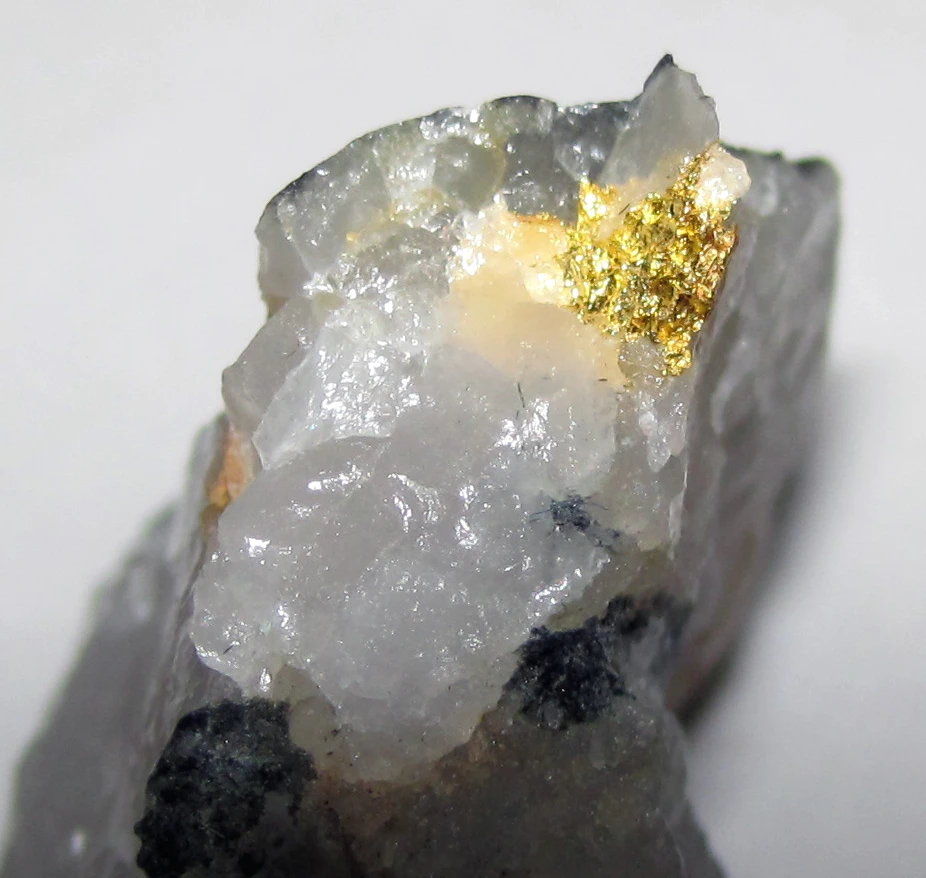
चित्र 5.1: भूगर्भीय शिराएं एवं लाम (Mineral Veins in Igneous Rock)।
💎 शिराएं व लाम:
• आग्नेय व कायांतरित चट्टानों की दरारों में मैग्मा के ठंडे होने से जमी सोने, तांबे व क्वार्ट्ज की चमकीली प्राकृतिक धात्विक शिराएं।
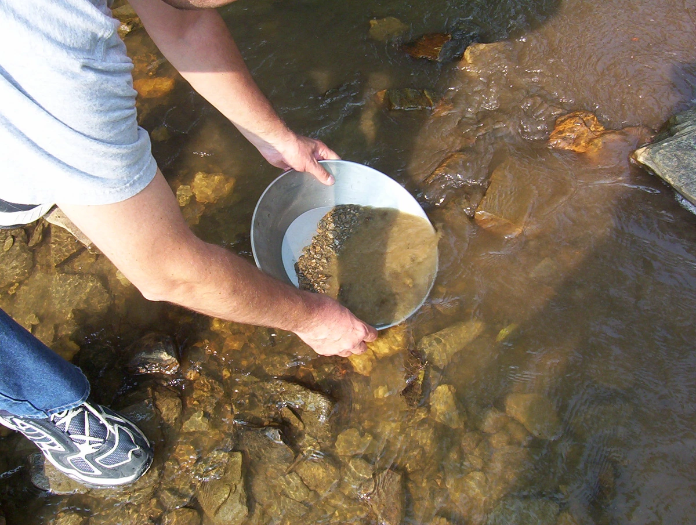
चित्र 5.2: जलोढ़ प्लेसर निक्षेप (Placer Gold Deposits in Riverbed)।
🌊 प्लेसर निक्षेप:
• पर्वतीय नदियों के जल द्वारा संक्षारित न होने वाले भारी सोने व खनिजों के प्राकृतिक कण जो नदी तल की रेत में जमा होते हैं।
⚠️ रैट-होल खनन (Rat-Hole Mining in Meghalaya):
• भारत में अधिकांश खनिज राष्ट्रीयकृत हैं, लेकिन उत्तर-पूर्वी भारत के आदिवासी क्षेत्रों में भूमि और खनिजों पर जनजातियों/समुदाय का व्यक्तिगत स्वामित्व होता है।
• मेघालय में जोवाई (Jowai) और चेरापूंजी में स्थानीय परिवारों द्वारा एक लंबी संकीर्ण सुरंग बनाकर कोयला निकाला जाता है, जिसे 'रैट-होल' (चूहा छेद) खनन कहा जाता है।
• राष्ट्रीय हरित न्यायाधिकरण (NGT) ने पर्यावरण और श्रमिकों की सुरक्षा के आधार पर इसे अवैध व प्रतिबंधित घोषित किया है।
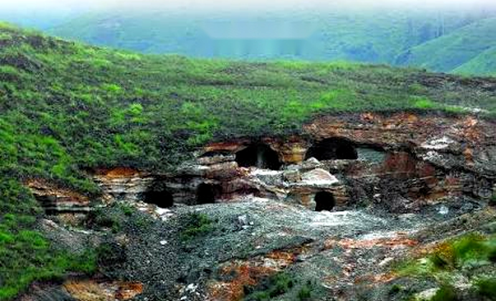
चित्र 5.3: मेघालय में पहाड़ियों पर संकीर्ण सुरंग आधारित 'रैट-होल' कोयला खनन (Side-Cutting Rat-Hole Mining)।
⚠️ खतरनाक व अवैध खनन पद्धति (Rat-Hole Coal Mining):
• मेघालय के जोवाई और चेरापूंजी में पहाड़ी ढलानों पर कोयला संस्तरों तक पहुँचने के लिए बनाए गए 3 से 4 फीट चौड़े संकीर्ण चूहा-नुमा छिद्र (Rat-Holes)।
• इसमें श्रमिक जान जोखिम में डालकर लेटकर या घुटनों के बल रेंगते हुए कोयला निकालते हैं। NGT द्वारा इसे पूर्णतः प्रतिबंधित व अवैध घोषित किया गया है।
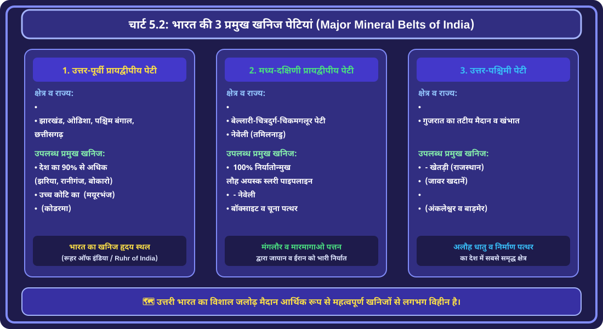
चार्ट 5.2: भारत की 3 प्रमुख खनिज पेटियां (Major Mineral Belts of India)।
🗺️ खनिज भूगोल:
• उत्तर-पूर्वी पेटी (छोटानागपुर): कोयला, लोहा, मैंगनीज, बॉक्साइट व अभ्रक (भारत का रूहर)।
• मध्य-दक्षिणी पेटी: कर्नाटक (कुद्रेमुख) का लोहा, नेवेली लिग्नाइट कोयला।
• उत्तर-पश्चिमी पेटी: राजस्थान (तांबा, सीसा-जस्ता, संगमरमर) व गुजरात (पेट्रोलियम)।
धात्विक खनिज वे हैं जिनसे धातुएं प्राप्त होती हैं। कुल धात्विक खनिज उत्पादन मूल्य के तीन-चौथाई भाग का योगदान लौह खनिजों (Ferrous Minerals) का है।
📌 अयस्क की किस्में:
1. मैग्नेटाइट (Magnetite): सर्वोत्तम कोटि का लौह अयस्क, जिसमें 70% लोहांश होता है। इसमें उत्कृष्ट प्राकृतिक चुंबकीय गुण होते हैं जो विद्युत उद्योगों में विशेष रूप से उपयोगी हैं।
2. हेमेटाइट (Hematite): औद्योगिक दृष्टि से भारत का सर्वाधिक उपयोग में आने वाला अयस्क, जिसमें 50% से 60% लोहांश होता है।
🗺️ भारत की 4 प्रमुख लौह अयस्क पेटियां:
• 1. ओडिशा-झारखंड पेटी: ओडिशा के मयूरभंज (बादामपहाड़) व केंदुझर में उच्च कोटि का हेमेटाइट; झारखंड के पश्चिमी सिंहभूम (गुआ व नोआमुंडी खदानें)।
• 2. दुर्ग-बस्तर-चंद्रपुर पेटी (छत्तीसगढ़ व महाराष्ट्र): बस्तर जिले की बैलाडीला की पहाड़ियों में अति उत्तम कोटि का हेमेटाइट अयस्क (विशाखापट्टनम पत्तन से जापान व दक्षिण कोरिया को निर्यात)।
• 3. बल्लारी-चित्रदुर्ग-चिक्कमगलूरु-तुमकूरु पेटी (कर्नाटक): कुद्रेमुख (Kudremukh) की खदानें विश्व के विशालतम निक्षेपों में से एक हैं। यह 100% निर्यातोन्मुख है जहाँ से लौह अयस्क को तरल घोल (Slurry) बनाकर पाइपलाइन द्वारा मंगलौर पत्तन भेजा जाता है।
• 4. महाराष्ट्र-गोवा पेटी: गोवा व महाराष्ट्र के रत्नागिरी जिले में स्थित, मारमागाओ पत्तन से समुद्री निर्यात।
📊 शीर्ष उत्पादक राज्य: ओडिशा (52% - देश में प्रथम), छत्तीसगढ़ (16%), कर्नाटक (14%), झारखंड (11%)।
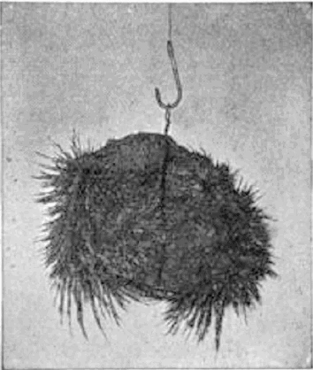
चित्र 5.4: मैग्नेटाइट अयस्क (Magnetite 70% Iron Specimen)।
🧲 प्राकृतिक चुंबकत्व:
• 70% लोहांश वाला सर्वोत्तम मैग्नेटाइट क्रिस्टल जो लोहे की कीलों और बुरादे को स्वतः आकर्षित करता है।
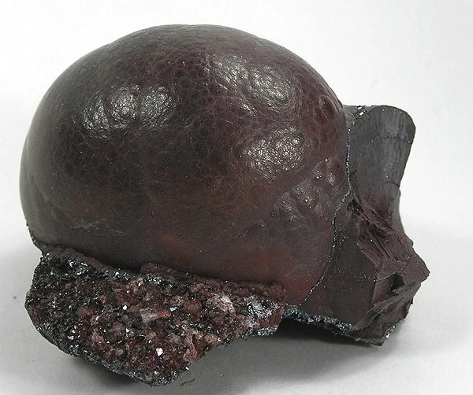
चित्र 5.5: हेमेटाइट लाल लौह अयस्क (Specular Hematite Iron Ore)।
🔩 औद्योगिक रीढ़:
• बैलाडीला व मयूरभंज की लाल-भूरी हेमेटाइट चट्टानें जो इस्पात निर्माण का 50-60% लोहांश प्रदान करती हैं।
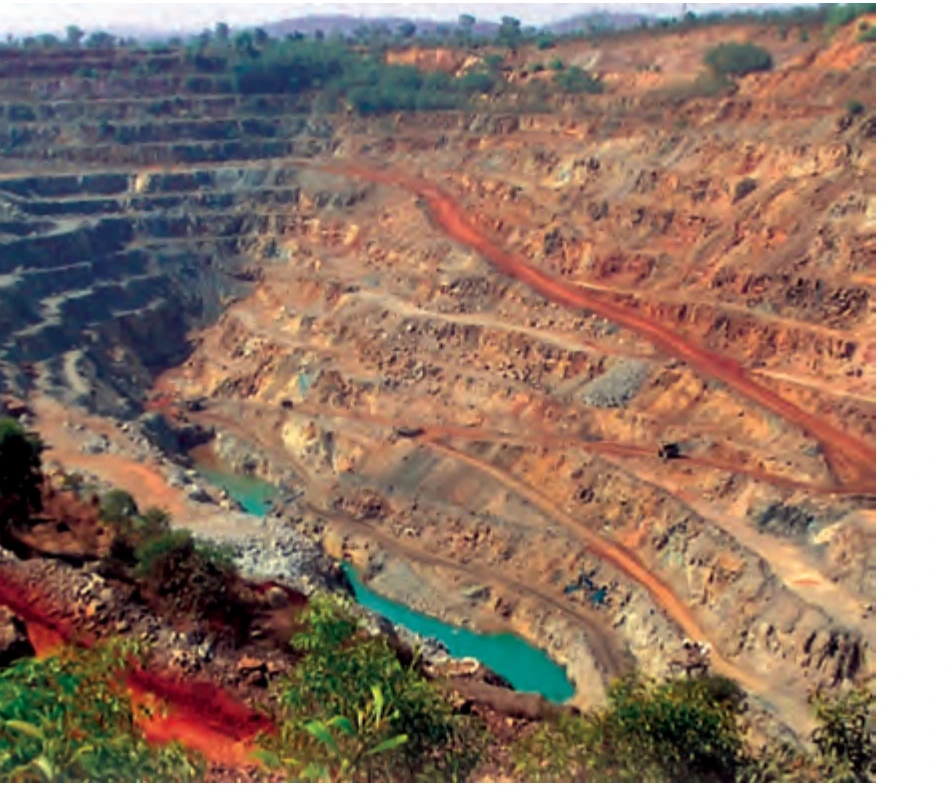
चित्र 5.6: खुली लौह अयस्क खदान (Open Cast Iron Ore Mine)।
🔩 भारी उद्योग आधार:
• आधुनिक उत्खनन मशीनों द्वारा विशाल सीढ़ीदार खुली खदानों से निकाला जाता भारी लौह अयस्क।
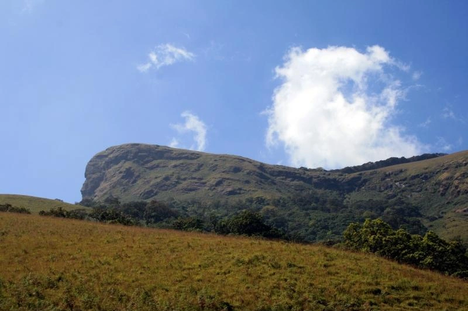
चित्र 5.7: कुद्रेमुख चोटी (Kudremukh - 'घोड़े के मुख' जैसी दिखने वाली पहाड़ी, कर्नाटक)।
🐴 कुद्रेमुख का नामकरण (घोड़े का मुख):
• कन्नड़ भाषा में 'कुद्रे' का अर्थ घोड़ा तथा 'मुख' का अर्थ चेहरा होता है। कर्नाटक के पश्चिमी घाट की यह पहाड़ी दूर से देखने पर बिल्कुल घोड़े के उठे हुए मुख जैसी दिखाई देती है।
• यहाँ स्थित विशाल लौह अयस्क निक्षेपों से अयस्क को घोल (Slurry) बनाकर पाइपलाइन द्वारा मंगलौर पत्तन तक भेजा जाता है।
📌 मुख्य उपयोग: मुख्य रूप से लोहा एवं इस्पात निर्माण (Steel Making) में विऑक्सीकारक व कठोरता प्रदाता के रूप में। 1 टन इस्पात बनाने में लगभग 10 किलोग्राम मैंगनीज की आवश्यकता होती है।
🏭 अन्य औद्योगिक उपयोग: ब्लीचिंग पाउडर, कीटनाशक दवाएं, पेंट, कांच उद्योग तथा ड्राई-सेल बैटरियों के निर्माण में।
🗺️ प्रमुख उत्पादक राज्य: मध्य प्रदेश (33% - प्रथम स्थान), महाराष्ट्र (25%), ओडिशा (19%), कर्नाटक व आंध्र प्रदेश।
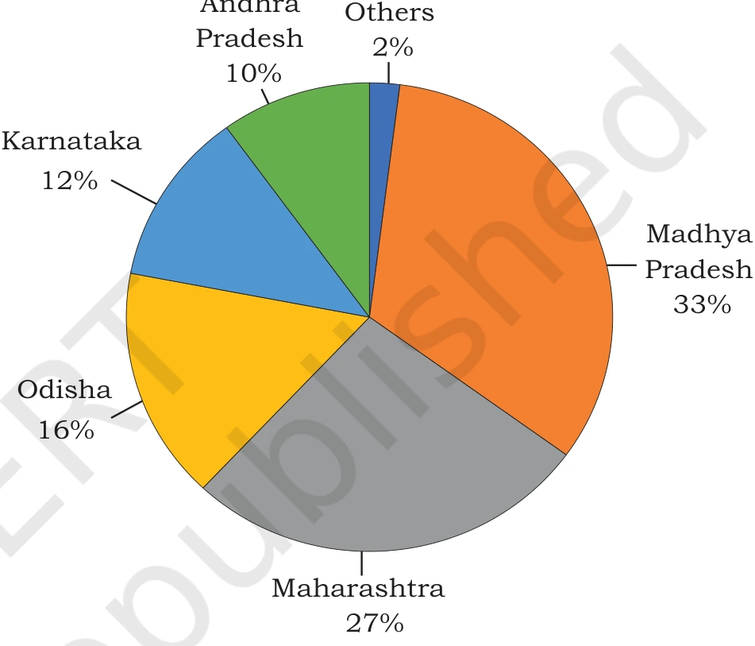
चित्र 5.8: भारत में मैंगनीज उत्पादन का राज्यवार अंश (Manganese Production Share)।
📊 मैंगनीज उत्पादन विश्लेषण:
• मध्य प्रदेश की बालाघाट खदानें तथा महाराष्ट्र की नागपुर-भंडारा पेटी देश के अग्रणी उत्पादक हैं।
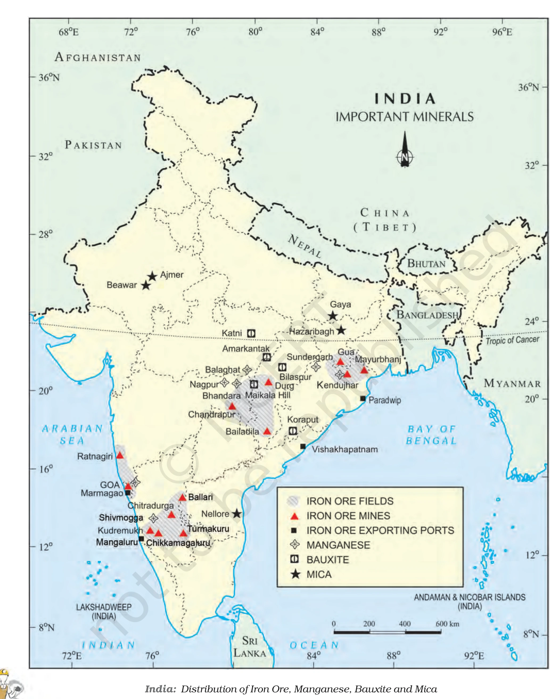
चित्र 5.9: भारत का प्रमुख धात्विक खनिज वितरण मानचित्र (लौह अयस्क, मैंगनीज, बॉक्साइट व अभ्रक)।
🗺️ मानचित्र अध्ययन:
• मयूरभंज, केंदुझर, बैलाडीला, कुद्रेमुख लौह खदानें तथा कोरापुट व अमरकंटक बॉक्साइट निक्षेप।
⚡ तांबा (Copper):
• गुणधर्म: आघातवर्ध्य (Malleable), तन्य (Ductile) तथा विद्युत का उत्तम सुचालक।
• उपयोग: विद्युत के तार, इलेक्ट्रॉनिक्स, ट्रांसफॉर्मर एवं रासायनिक उद्योग।
• प्रमुख क्षेत्र: मध्य प्रदेश की बालाघाट खदानें (देश का 52% तांबा), राजस्थान का झुंझुनू (खेतड़ी कॉपर बेल्ट) तथा झारखंड का सिंहभूम जिला।
✈️ बॉक्साइट (Bauxite / Aluminium Ore):
• गुणधर्म: बॉक्साइट से एल्युमिना और फिर एल्युमिनियम प्राप्त होता है। यह लोहे जैसी शक्ति के साथ अत्यंत हल्का तथा ऊष्मा व विद्युत का सुचालक होता है।
• प्रमुख क्षेत्र: ओडिशा (देश का 51% बॉक्साइट - शीर्ष राज्य), विशेष रूप से कोरापुट जिले का पंचपतमली निक्षेप। इसके अलावा मध्य प्रदेश का अमरकंटक पठार, मैकाल पहाड़ियां तथा छत्तीसगढ़ का बिलासपुर-कटनी क्षेत्र।
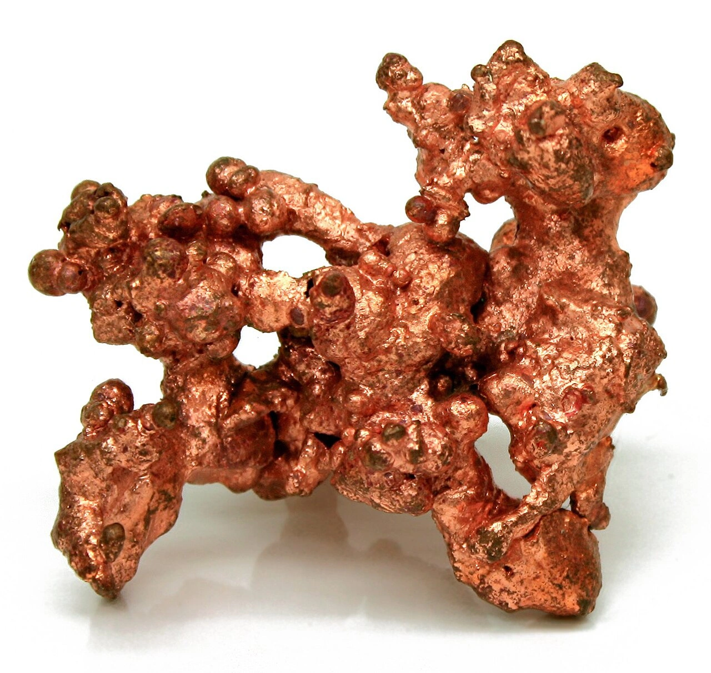
चित्र 5.10: प्राकृतिक तांबा अयस्क (Native Metallic Copper Mineral Specimen)।
⚡ विद्युत का उत्तम सुचालक:
• मध्य प्रदेश के बालाघाट (देश का 52% तांबा) एवं राजस्थान के खेतड़ी (झुंझुनू) से निकाला जाने वाला लचीला व आघातवर्ध्य तांबा, जो विद्युत तार, इलेक्ट्रॉनिक्स एवं ट्रांसफॉर्मर उद्योग का मुख्य आधार है।
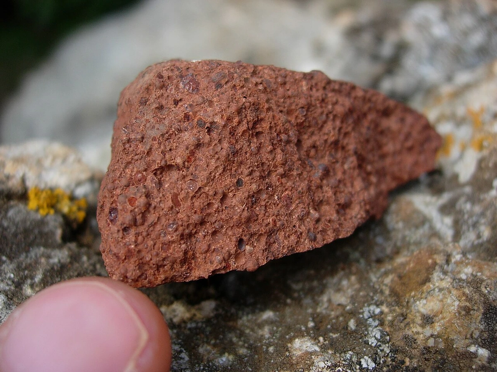
चित्र 5.11: बॉक्साइट अयस्क (Bauxite Ore Mineral Specimen)।
✈️ हल्का व मजबूत धातु:
• लाल बॉक्साइट अयस्क का शोधन कर वायुयान व विद्युत तारों के लिए हल्की चांदी जैसी एल्युमिनियम सिल्लियां तैयार करना।
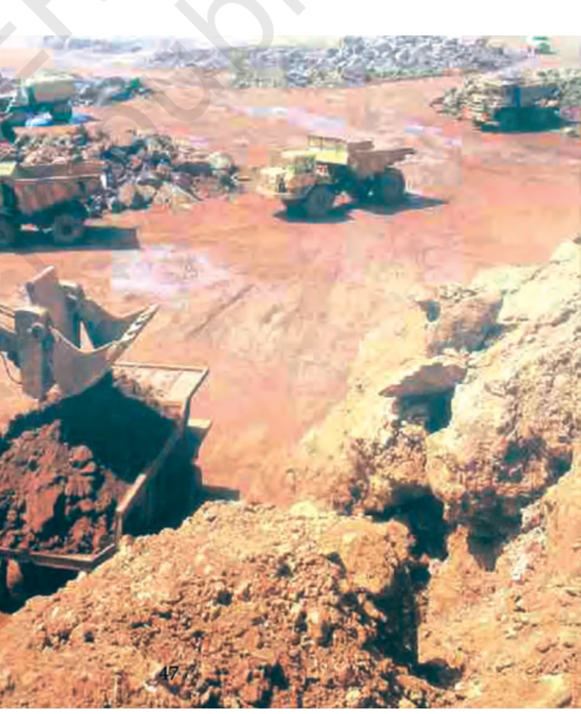
चित्र 5.12: पंचपतमली (ओडिशा) की विशाल बॉक्साइट खदान (Bauxite Mining)।
✈️ एल्युमिनियम का स्रोत:
• पठारी सतह पर अपक्षय द्वारा जमा हुआ लाल-भूरा बॉक्साइट अयस्क जो वायुयान व विद्युत उद्योगों का मुख्य आधार है।
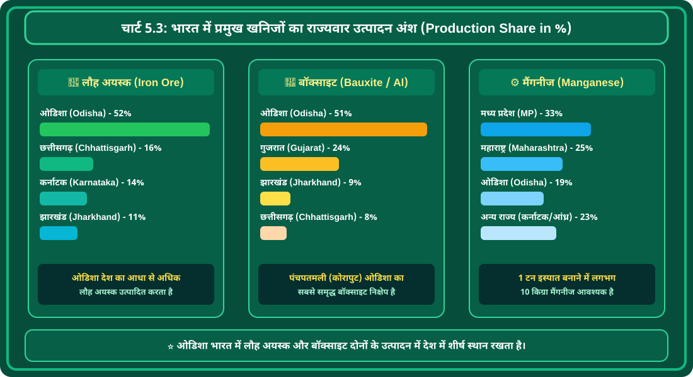
चार्ट 5.3: प्रमुख खनिजों (लोहा, बॉक्साइट, मैंगनीज) का राज्यवार उत्पादन अंश।
📊 उत्पादन तुलना:
• लौह अयस्क: ओडिशा (52%), छत्तीसगढ़ (16%) | बॉक्साइट: ओडिशा (51%), गुजरात (24%) | मैंगनीज: मध्य प्रदेश (33%), महाराष्ट्र (25%)।
✨ अभ्रक (Mica):
• गुणधर्म: यह पतली चादरों (Plates/Leaves) में आसानी से विभाजित होने वाला खनिज है। इसमें उत्कृष्ट डाइइलेक्ट्रिक शक्ति, कम शक्ति ह्रास गुणांक तथा उच्च वोल्टेज प्रतिरोधक क्षमता होती है।
• उपयोग: विद्युत एवं इलेक्ट्रॉनिक उद्योगों का अपरिहार्य व अनिवार्य घटक।
• प्रमुख क्षेत्र: झारखंड की कोडरमा-गया-हजारीबाग पेटी (विश्व का अग्रणी उत्पादक), राजस्थान का अजमेर व भीलवाड़ा, आंध्र प्रदेश की नेल्लोर अभ्रक पेटी।
🧱 चूना पत्थर (Limestone):
• उपयोग: सीमेंट उद्योग का आधारभूत कच्चा माल तथा लौह-इस्पात उद्योग की ब्लास्ट फर्नेस (प्रगलन भट्टी) में गालक (Flux) के रूप में अनिवार्य।
• प्रमुख राज्य: राजस्थान (21% - प्रथम), मध्य प्रदेश (11%), आंध्र प्रदेश (11%), छत्तीसगढ़ (10%)।
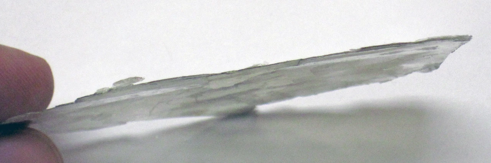
चित्र 5.13: कोडरमा अभ्रक चादरें (Transparent Muscovite Mica Sheet)।
✨ विद्युत रोधक गुण:
• पतली चादरों में विभाजित होने वाला पारदर्शी अभ्रक जो उच्च वोल्टेज विद्युत व इलेक्ट्रॉनिक उपकरणों में प्रयुक्त होता है।
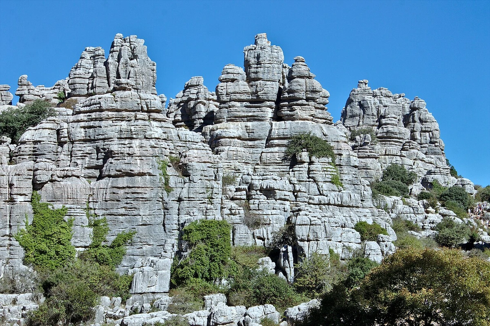
चित्र 5.14: चूना पत्थर खदान (Open Cast Limestone Quarry)।
🧱 सीमेंट उद्योग का आधार:
• राजस्थान व मध्य प्रदेश की चूना पत्थर खदानें जो आधुनिक भवन निर्माण व सीमेंट कारखानों को कच्चा माल देती हैं।
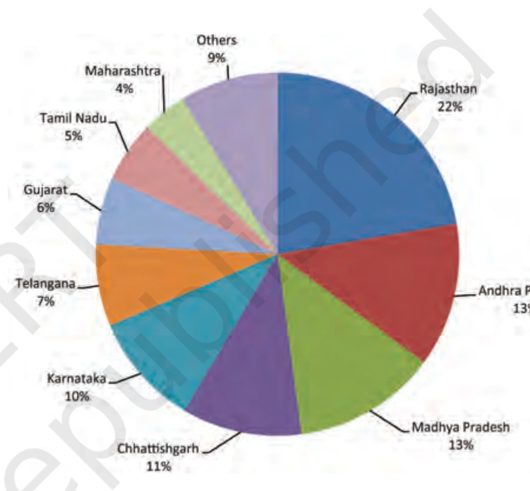
चित्र 5.15: भारत में चूना पत्थर उत्पादन का राज्यवार अंश (Limestone Production Share)।
🧱 सीमेंट उद्योग का आधार:
• राजस्थान और मध्य प्रदेश देश के प्रमुख चूना पत्थर उत्पादक राज्य हैं।
⚠️ खनन के खतरे एवं स्वास्थ्य पर प्रभाव ('घातक उद्योग' / Killer Industry):
1. श्वसन रोग: खदानों में उड़ने वाली धूल और जहरीले धुएं के लगातार सांस में जाने से खनिकों को फेफड़ों की गंभीर बीमारियां (जैसे सिलिकोसिस / Silicosis व एस्बेस्टोसिस) हो जाती हैं।
2. दुर्घटनाएं: खदान की छतों का ढहना, भूमिगत जल का एकाएक भर जाना और कोयला खदानों में मीथेन गैस से आग लगना।
3. पर्यावरण विनाश: भूमि निम्नीकरण (Land Degradation), वनों की कटाई तथा खदान के अवशिष्ट बहने से नदियों का जल अत्यंत अम्लीय व दूषित होना (Acid Mine Drainage)।
ऊर्जा सभी क्रियाकलापों के लिए आवश्यक है। पारंपरिक ऊर्जा संसाधनों में जीवाश्म ईंधन (कोयला, पेट्रोलियम, प्राकृतिक गैस) तथा विद्युत शामिल हैं।
📌 कोयले की 4 प्रमुख श्रेणियां (दहन क्षमता के आधार पर):
1. पीट (Peat): दलदलों में पौधों के सड़ने से बना प्रारंभिक कोयला; कम कार्बन, उच्च नमी व कम ताप क्षमता।
2. लिग्नाइट (Lignite): निम्न कोटि का भूरा कोयला, मुलायम व अधिक नमी वाला। प्रमुख भंडार: तमिलनाडु का नेवेली (Neyveli) (विद्युत उत्पादन में प्रयुक्त)।
3. बिटुमिनस (Bituminous): गहराई में दबे तथा उच्च ताप से प्रभावित सर्वाधिक लोकप्रिय व्यावसायिक कोयला। उच्च कोटि का बिटुमिनस 'धातुकर्मीय कोयला' (Metallurgical Coal) कहलाता है, जिसका उपयोग ब्लास्ट फर्नेस में लोहे के प्रगलन में किया जाता है।
4. एंथ्रेसाइट (Anthracite): सर्वोत्तम कोटि का कठोर कोयला, जिसमें 80% से अधिक कार्बन होता है और धुआं रहित तीव्र ऊष्मा देता है। (जम्मू-कश्मीर)।
⏳ भारत में कोयले के 2 प्रमुख भूगर्भीय काल:
• 1. गोंडवाना कोयला (200 मिलियन वर्ष पुराना): देश का 98% कोयला भंडार। दामोदर घाटी (झरिया, रानीगंज, बोकारो), गोदावरी, महानदी, सोन व वर्धा घाटियां।
• 2. टर्शियरी कोयला (55 मिलियन वर्ष पुराना): उत्तर-पूर्वी राज्यों—मेघालय, असम, अरुणाचल प्रदेश व नागालैंड में पाया जाता है।
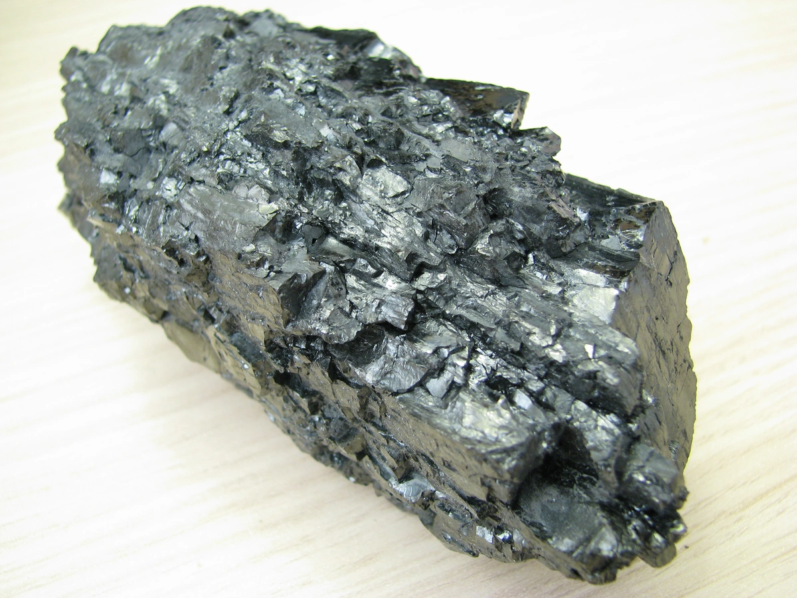
चित्र 5.16: एंथ्रेसाइट कोयला (High Grade Glossy Anthracite Coal Specimen)।
⬛ सर्वोत्तम कोटि का कठोर कोयला:
• 80% से अधिक कार्बन वाला यह कोयला अत्यंत कठोर, चमकदार कांच जैसी आभा (Vitreous luster) वाला तथा धुआं-रहित तीव्र ऊष्मा देने वाला होता है (जम्मू-कश्मीर में पाया जाता है)।
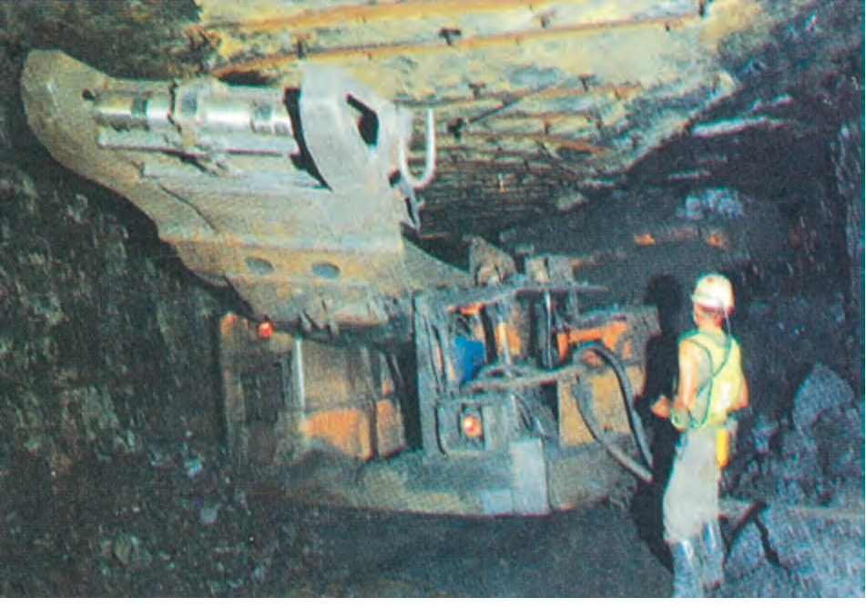
चित्र 5.17: कोयला खदान के अंदर का भूमिगत दृश्य (Inside a Coal Mine)।
⬛ भूमिगत उत्खनन:
• गहरे भूमिगत संस्तरों से सुरक्षा खंभों के सहारे आधुनिक मशीनों द्वारा निकाला जाता कोयला।
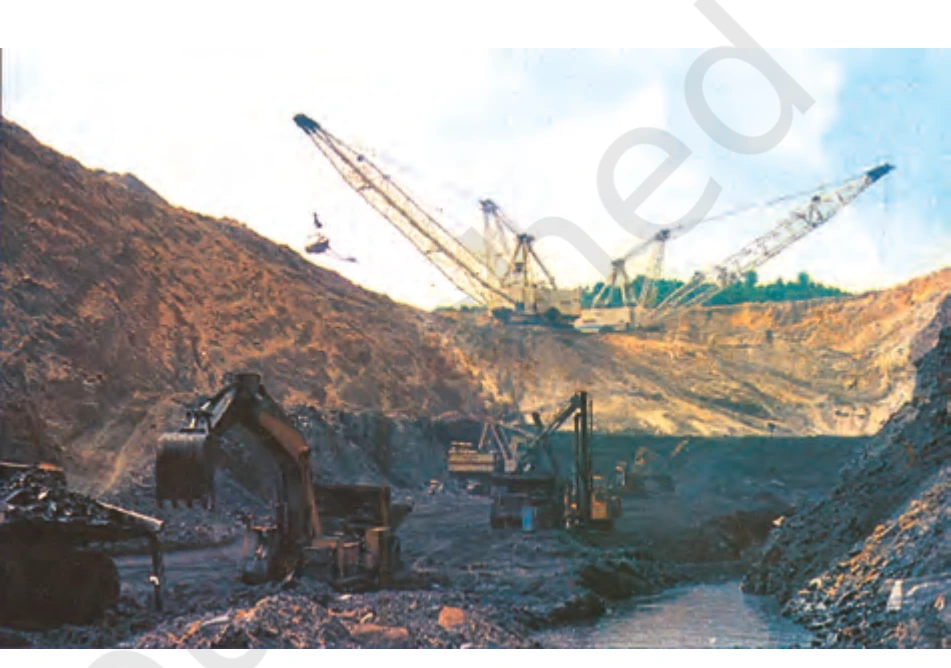
चित्र 5.18: कोयला खदान के बाहर का दृश्य एवं लोडिंग यार्ड (Outside a Coal Mine)।
🚂 परिवहन व वितरण:
• ताप विद्युत गृहों और इस्पात कारखानों को आपूर्ति हेतु रेलवे वैगनों में कोयले की लोडिंग।
🛢️ पेट्रोलियम (तरल सोना / Liquid Gold):
• भूगर्भीय उपस्थिति: टर्शियरी काल की अवसादी शैलों की अभिनतियों (Synclines) और गुंबदों (Domes) में संचित तेल-युक्त परतें। यह उर्वरक, संश्लेषित वस्त्र व पेट्रोरसायन का नोडल उद्योग (Nodal Industry) है।
• प्रमुख तेल क्षेत्र: मुंबई हाई (देश का 63% तेल उत्पादन - शीर्ष), गुजरात (18% - अंकलेश्वर सबसे प्रमुख क्षेत्र), असम (16% - डिगबोई भारत का सबसे पुराना तेल उत्पादक क्षेत्र, नहरकटिया, मोरान-हुगरीजन)।
💨 प्राकृतिक गैस (Clean Energy / CNG / PNG):
• स्वच्छ ईंधन: कार्बन डाइऑक्साइड का अत्यंत कम उत्सर्जन करने के कारण यह पर्यावरण-अनुकूल ईंधन माना जाता है।
• प्रमुख क्षेत्र: कृष्णा-गोदावरी (KG) बेसिन, मुंबई हाई, खंभात की खाड़ी, राजस्थान (जैसलमेर)।
• HVJ पाइपलाइन: हजीरा-विजयपुर-जगदीशपुर (HVJ) देश की 1700 किमी लंबी पहली अंतर्राज्यीय गैस पाइपलाइन है, जिसे गेल (GAIL) द्वारा संचालित किया जाता है। यह पश्चिमी तट के गैस क्षेत्रों को उत्तर भारत के उर्वरक व विद्युत संयंत्रों से जोड़ती है।
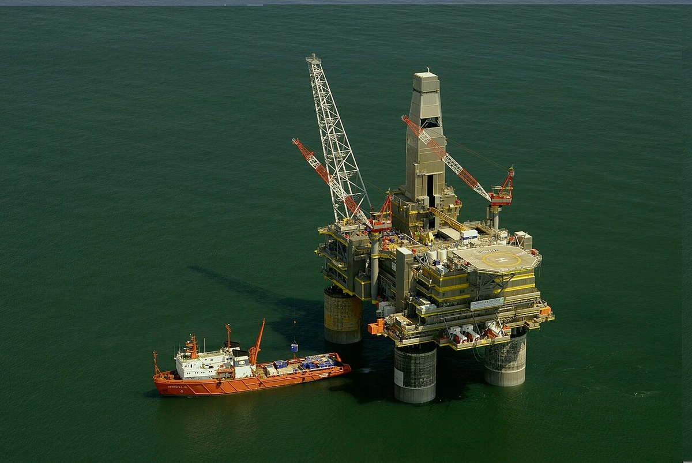
चित्र 5.19: अपतटीय तेल रिग (Offshore Marine Oil Drilling Platform)।
🛢️ देश का 63% पेट्रोलियम:
• अरब सागर के अपतटीय जल में स्थापित विशाल फ्लोटिंग जैक-अप रिग जो समुद्री तलहटी से कच्चा तेल निकालती है।
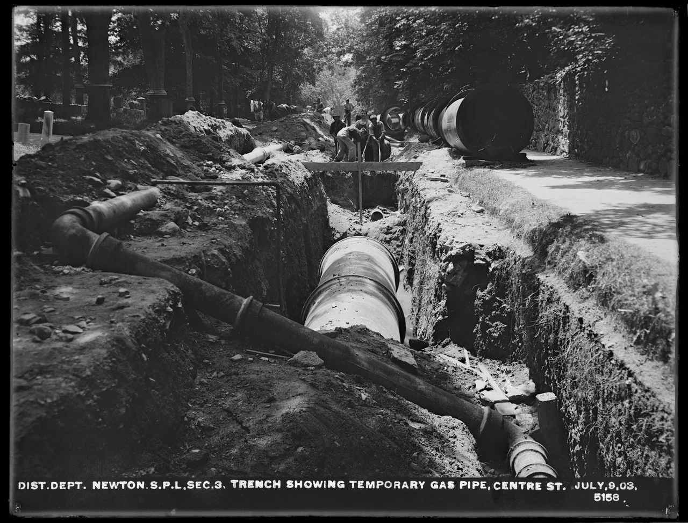
चित्र 5.20: प्राकृतिक गैस पाइपलाइन निर्माण (Cross-Country Gas Pipeline Laying)।
💨 स्वच्छ गैस ऊर्जा संचरण:
• पश्चिमी तट से उत्तर भारत के विद्युत व उर्वरक कारखानों तक निर्बाध गैस आपूर्ति हेतु भूमिगत स्टील पाइपलाइन।
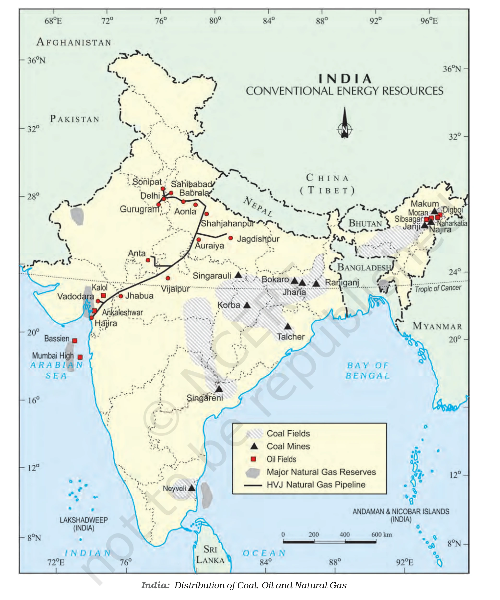
चित्र 5.21: भारत का जीवाश्म ऊर्जा संसाधन मानचित्र (कोयला, पेट्रोलियम एवं गैस पाइपलाइन)।
🗺️ मानचित्र विश्लेषण:
• रानीगंज, झरिया, बोकारो, सिंगरौली, तलचर कोयला क्षेत्र तथा मुंबई हाई, अंकलेश्वर, डिगबोई तेल क्षेत्र।
जीवाश्म ईंधनों के सीमित भंडार और बढ़ते पर्यावरणीय प्रदूषण के कारण अक्षय एवं नवीकरणीय गैर-पारंपरिक ऊर्जा संसाधनों का तीव्र विकास अत्यंत आवश्यक है।
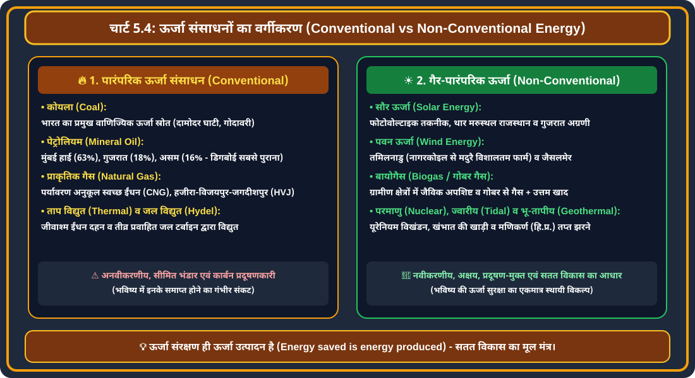
चार्ट 5.4: पारंपरिक बनाम गैर-पारंपरिक ऊर्जा संसाधनों का तुलनात्मक मॉडल।
⚡ ऊर्जा संक्रमण:
• पारंपरिक (सीमित व प्रदूषणकारी) से गैर-पारंपरिक (अक्षय, सतत व पर्यावरण अनुकूल) की ओर तीव्र परिवर्तन।
⚛️ 1. परमाणु / आणविक ऊर्जा (Nuclear Energy):
• परमाणुओं के विखंडन से अपार ऊर्जा विमुक्त होती है। यूरेनियम (झारखंड के सिंहभूम व राजस्थान के अरावली) तथा थोरियम (केरल के समुद्र तट की मोनाजाइट बालू में प्रचुर)।
• 6 प्रमुख परमाणु केंद्र: 1. तारापुर (महाराष्ट्र), 2. रावतभाटा (राजस्थान), 3. काकरापारा (गुजरात), 4. नरोरा (उत्तर प्रदेश), 5. कैगा (कर्नाटक), 6. कलपक्कम / कुडनकुलम (तमिलनाडु)।
☀️ 2. सौर ऊर्जा (Solar Energy):
• फोटोवोल्टाइक (Photovoltaic) तकनीक द्वारा सूर्य के प्रकाश को सीधे विद्युत में परिवर्तित किया जाता है। भारत एक उष्णकटिबंधीय देश है जहाँ राजस्थान और गुजरात के थार मरुस्थल में सौर ऊर्जा की असीम संभावनाएं हैं।
💨 3. पवन ऊर्जा (Wind Energy):
• भारत विश्व में पवन महाशक्ति के रूप में उभर रहा है। तमिलनाडु में नागरकोइल से मदुरै तक देश का विशालतम पवन ऊर्जा फार्म स्थापित है। इसके अतिरिक्त जैसलमेर (राजस्थान), आंध्र प्रदेश, कर्नाटक व गुजरात में पवन चक्कियों का बड़ा जाल है।
🌱 4. बायोगैस (Biogas / गोबर गैस):
• ग्रामीण क्षेत्रों में झाड़ियों, कृषि अपशिष्ट, पशुओं के गोबर और मानव मल से बायोगैस बनाई जाती है। यह ग्रामीणों को स्वच्छ धुआं-रहित रसोई ईंधन प्रदान करती है तथा उच्च गुणवत्ता की जैविक खाद देती है, जिससे पेड़ों की कटाई और उपलों के जलने से मृदा पोषक तत्वों का नुकसान रुकता है।
🌊 5. ज्वारीय ऊर्जा (Tidal Energy):
• समुद्री ज्वार-भाटे के जल-प्रवाह से टर्बाइन चलाकर विद्युत उत्पादन। भारत में खंभात की खाड़ी, कच्छ की खाड़ी (गुजरात) तथा पश्चिम बंगाल के सुंदरवन डेल्टा में विशाल ज्वारीय ऊर्जा क्षमता मौजूद है।
♨️ 6. भू-तापीय ऊर्जा (Geothermal Energy):
• पृथ्वी के आंतरिक भाग से निकलने वाले उच्च ताप और भाप से विद्युत उत्पादन। 2 प्रमुख प्रायोगिक परियोजनाएं: 1. पार्वती घाटी (मणिकर्ण, हिमाचल प्रदेश) तथा 2. पूगा घाटी (लद्दाख)।
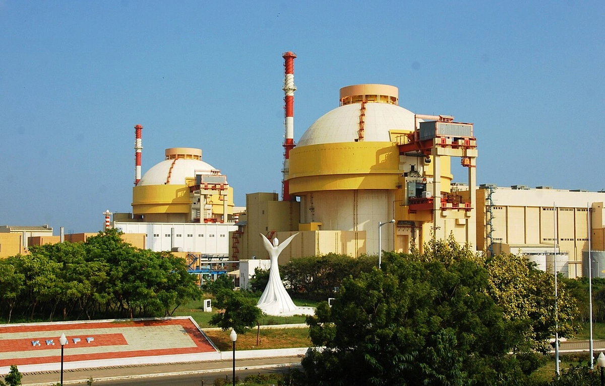
चित्र 5.22: कुडनकुलम परमाणु ऊर्जा संयंत्र (Kudankulam Nuclear Power Station, Tamil Nadu)।
⚛️ भारत का विशालतम परमाणु संयंत्र:
• यूरेनियम और थोरियम के नियंत्रित परमाणु विखंडन (Nuclear Fission) द्वारा विशाल मात्रा में कार्बन-मुक्त विद्युत उत्पादन करने वाला आधुनिक रिएक्टर।
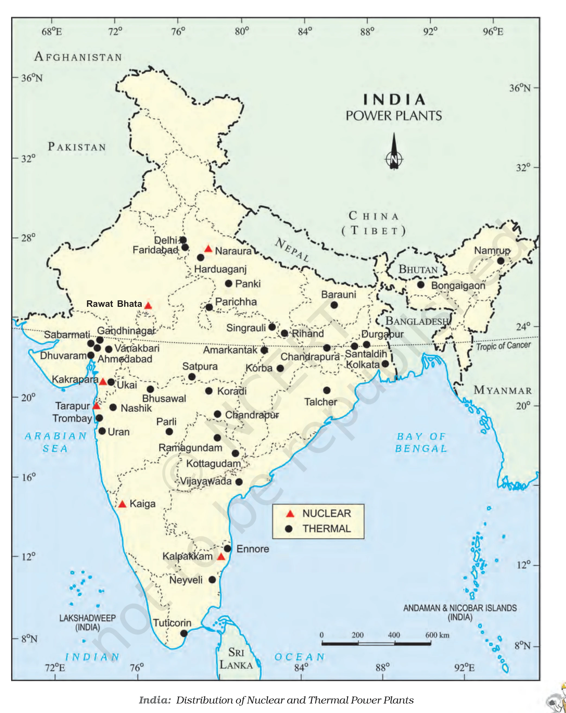
चित्र 5.23: भारत का प्रमुख विद्युत संयंत्र मानचित्र (परमाणु एवं ताप विद्युत गृह)।
🗺️ मानचित्र अध्ययन:
• नरोरा, रावतभाटा, काकरापारा, तारापुर, कैगा, कलपक्कम परमाणु संयंत्र तथा सिंगरौली, कोरबा, तलचर ताप संयंत्र।
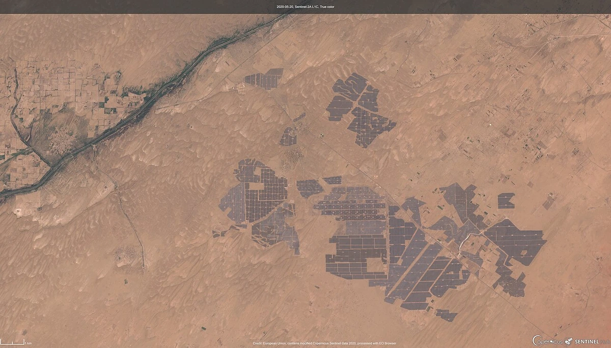
चित्र 5.24: थार मरुस्थल सौर ऊर्जा पार्क (Bhadla Mega Solar Power Park)।
☀️ सौर ऊर्जा क्रांति:
• राजस्थान के विशाल रेतीले धोरों में फैली लाखों फोटोवोल्टाइक सोलर प्लेटें जो सूर्य की किरणों से हरित बिजली बनाती हैं।
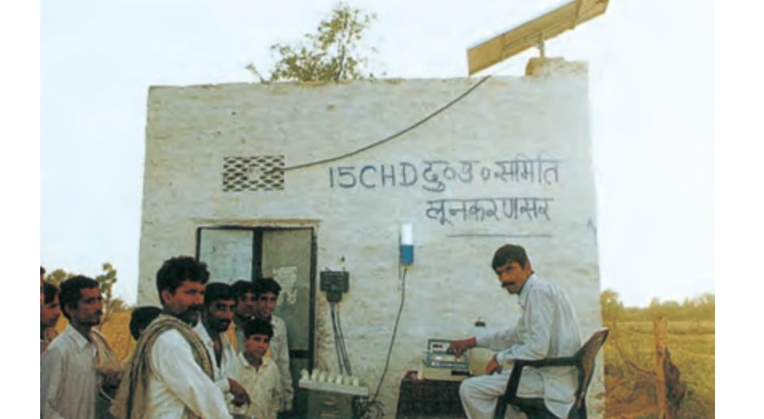
चित्र 5.25: सौर ऊर्जा चालित ग्रामीण इलेक्ट्रॉनिक दूध संकलन केंद्र।
☀️ ग्रामीण सौर क्रांति:
• दूरदराज के ग्रामीण इलाकों में सौर फोटोवोल्टाइक पैनलों द्वारा संचालित दुग्ध परीक्षण व शीतलन प्रणाली।
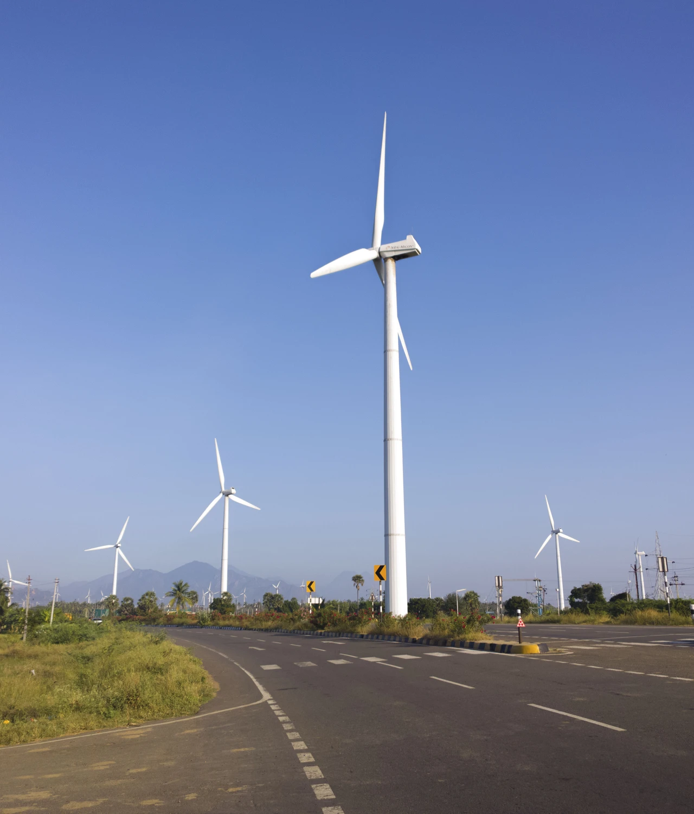
चित्र 5.26: तमिलनाडु पवन ऊर्जा फार्म (Muppandal Wind Turbines Farm)।
💨 पवन महाशक्ति:
• पश्चिमी घाट की पहाड़ियों के सामने तटीय तेज हवाओं से घूमने वाली विशाल आधुनिक पवन टर्बाइनें।
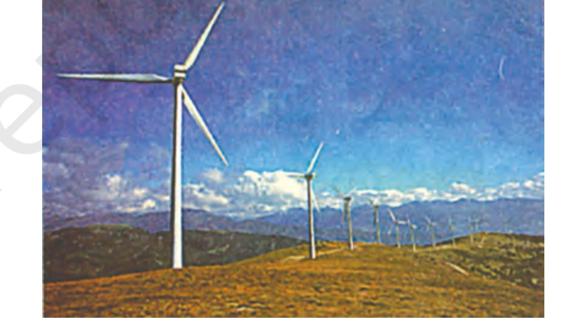
चित्र 5.27: नागरकोइल (तमिलनाडु) में पवन ऊर्जा फार्म (Wind Mill Farm)।
💨 स्वच्छ पवन विद्युत:
• तटीय तेज हवाओं से घूमने वाली विशाल पवन टर्बाइनें जो बिना प्रदूषण के बिजली उत्पन्न करती हैं।
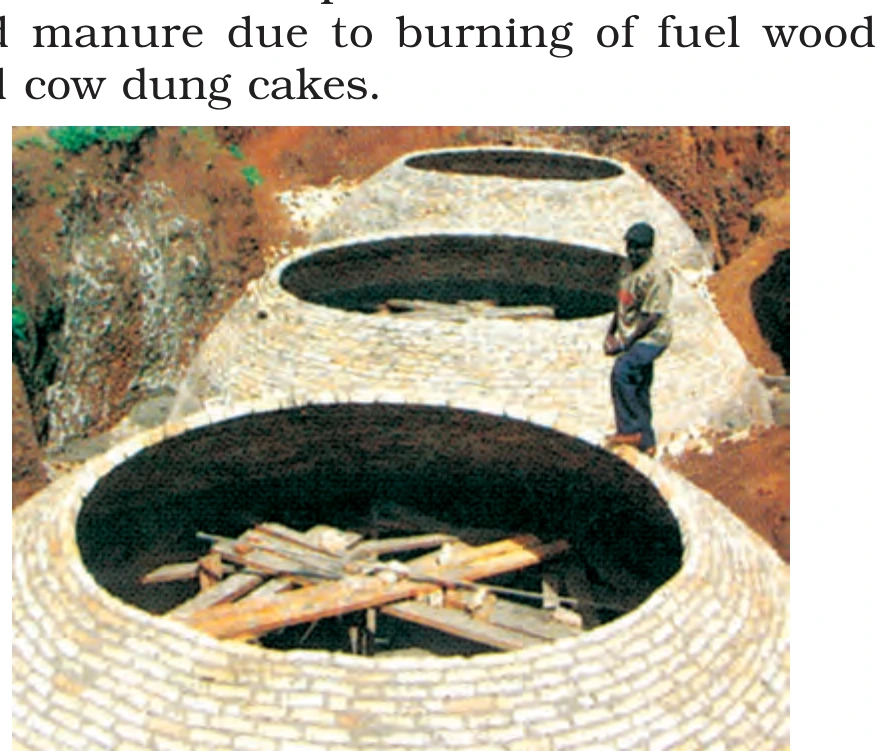
चित्र 5.28: ग्रामीण बायोगैस संयंत्र (Gobar Gas Plant Model Photo)।
🌱 दोहरा ग्रामीण लाभ:
• पशु गोबर से धुआं-रहित स्वच्छ रसोई गैस तथा खेतों के लिए नाइट्रोजन-युक्त उत्तम जैविक खाद।
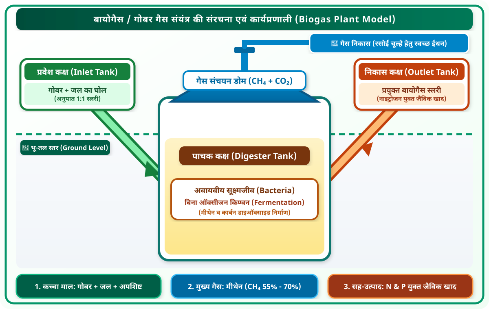
चित्र 5.29: गोबर गैस संयंत्र की संरचना एवं कार्यप्रणाली रेखाचित्र (Biogas Plant Architecture Diagram)।
🔬 गोबर गैस संयंत्र की कार्यप्रणाली (Working Mechanism):
1. प्रवेश कक्ष (Inlet): गोबर और जल का 1:1 घोल (Slurry) भूमिगत पाचक कक्ष में भेजा जाता है।
2. पाचक कक्ष (Digester): अवायवीय जीवाणु (Anaerobic Microbes) बिना ऑक्सीजन के किण्वन करके मीथेन (CH₄ 55-70%) एवं कार्बन डाइऑक्साइड बनाते हैं।
3. गैस धारक (Dome): गैस ऊपर डोम में एकत्र होती है और वाल्व खोलकर पाइप द्वारा रसोई चूल्हे को भेजी जाती है।
4. निकास कक्ष (Outlet): बची हुई प्रयुक्त स्लरी बाहर निकलती है, जो नाइट्रोजन एवं फॉस्फोरस से भरपूर उत्कृष्ट जैविक खाद बनती है।
चित्र 5.30: समुद्री ज्वारीय ऊर्जा बैराज संयंत्र (Marine Tidal Power Plant)।
🌊 ज्वार-भाटे से हरित विद्युत:
• समुद्र में ज्वार के समय बांध के स्लुइस गेट से जल को खाड़ी में भर लिया जाता है और भाटे के समय जल निकासी द्वारा समुद्री टर्बाइनों को चलाकर स्वच्छ बिजली बनाई जाती है (गुजरात की खंभात व कच्छ की खाड़ी)।
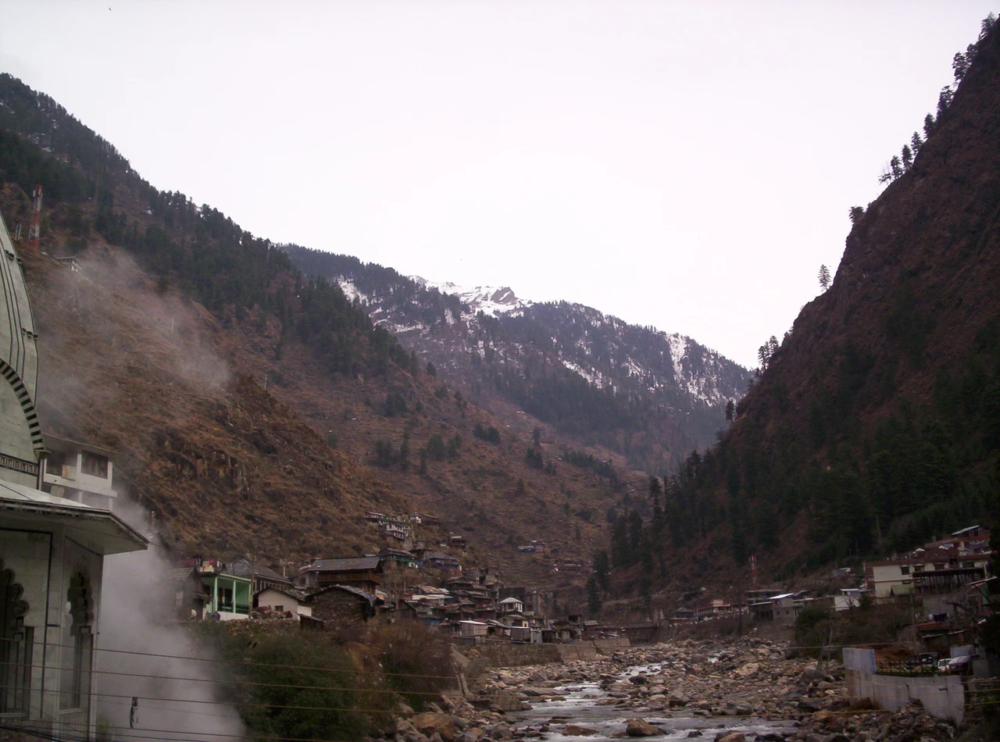
चित्र 5.31: मणिकर्ण भू-तापीय गर्म जल स्रोत (Manikaran Geothermal Springs, HP)।
♨️ भू-तापीय शक्ति:
• हिमालय की पार्वती घाटी में पृथ्वी के आंतरिक ताप से खौलता हुआ जल व भाप जिससे प्रायोगिक बिजली उत्पन्न की जाती है।
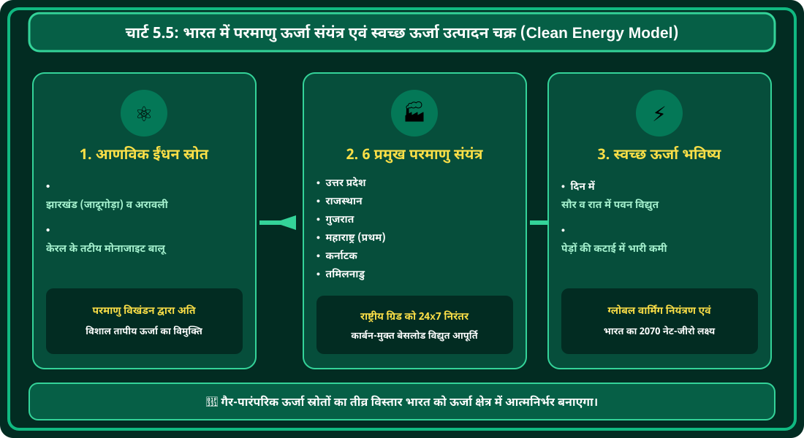
चार्ट 5.5: परमाणु ऊर्जा संयंत्र एवं स्वच्छ ऊर्जा उत्पादन चक्र (Clean Energy Model)।
⚛️ 2070 नेट-जीरो लक्ष्य:
• परमाणु विखंडन बेसलोड + सौर-पवन हाइब्रिड ग्रिड द्वारा भारत का स्वच्छ व आत्मनिर्भर ऊर्जा भविष्य।
💡 "ऊर्जा संरक्षण ही ऊर्जा उत्पादन है" (Energy Saved is Energy Produced):
खनिज और जीवाश्म ईंधन बनने में लाखों वर्ष (भूगर्भीय काल) लगते हैं, जबकि हमारा उपभोग अत्यंत तीव्र गति से हो रहा है। ये अनवीकरणीय (Non-renewable) एवं सीमित संसाधन हैं। अतः इनका सतत व विवेकपूर्ण उपयोग अनिवार्य है।
🛡️ संरक्षण के प्रमुख व्यावहारिक उपाय:
1. पुनर्चक्रण एवं पुनरुत्पादन (Recycling of Metals): धातुओं के स्क्रैप और कबाड़ का पुनः उपयोग करना।
2. विकल्पों की खोज: दुर्लभ धातुओं के स्थान पर अन्य प्रचुर पदार्थों का उपयोग।
3. ऊर्जा दक्षता: जब आवश्यकता न हो तो बिजली बंद करना, ऊर्जा-बचत वाले उपकरण (LED बल्ब, 5-स्टार इनवर्टर) का उपयोग।
4. सार्वजनिक परिवहन: व्यक्तिगत कारों/बाइकों के स्थान पर मेट्रो, ट्रेन व बसों का अधिक प्रयोग।
5. गैर-पारंपरिक ऊर्जा को प्राथमिकता: सौर, पवन व बायोगैस का घरेलू व व्यावसायिक स्तर पर अधिकतम उपयोग।
📌 परीक्षा उपयोगी त्वरित सारांश बिंदु (Quick Exam Takeaways):
1. लौह अयस्क: मैग्नेटाइट (70% लोहा/चुंबकीय), हेमेटाइट (50-60% लोहा/औद्योगिक)। ओडिशा (52%) शीर्ष राज्य।
2. कुद्रेमुख: 100% निर्यातोन्मुख लौह अयस्क, स्लरी पाइपलाइन द्वारा मंगलौर पत्तन।
3. बॉक्साइट: ओडिशा (51% - पंचपतमली)। एल्युमिनियम का मुख्य अयस्क।
4. अभ्रक: कोडरमा (झारखंड) शीर्ष। इलेक्ट्रॉनिक व विद्युत रोधक।
5. कोयला: लिग्नाइट (नेवेली), बिटुमिनस (धातुकर्मीय), एंथ्रेसाइट (सर्वोत्तम)। गोंडवाना कोयला दामोदर घाटी में।
6. पेट्रोलियम: मुंबई हाई (63% शीर्ष), डिगबोई (असम - सबसे पुराना)।
7. HVJ पाइपलाइन: हजीरा-विजयपुर-जगदीशपुर (1700 किमी गैस पाइपलाइन GAIL)।
8. पवन ऊर्जा: नागरकोइल से मदुरै (तमिलनाडु) विशालतम पवन फार्म।
9. भू-तापीय ऊर्जा: मणिकर्ण (हि.प्र.) व पूगा घाटी (लद्दाख)।